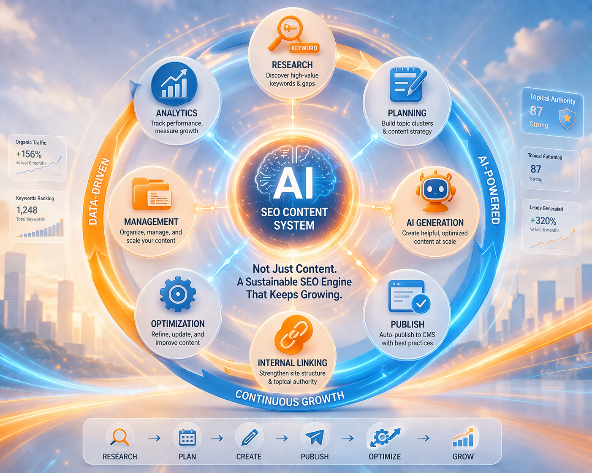
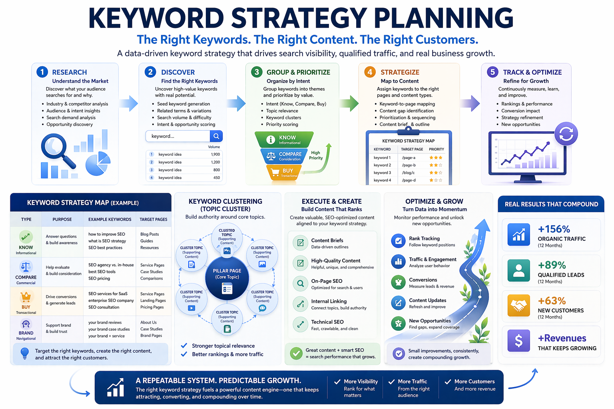
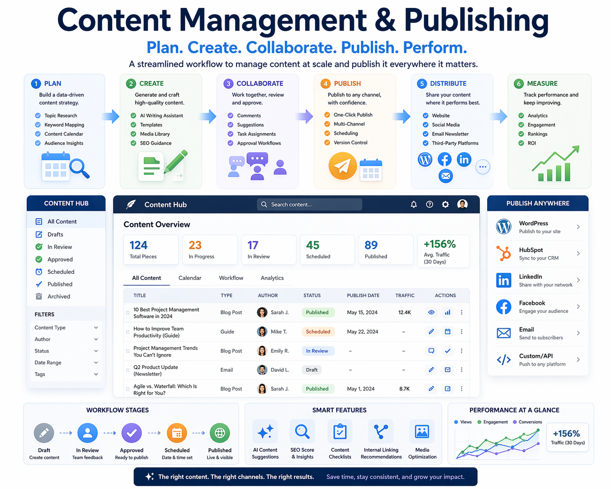
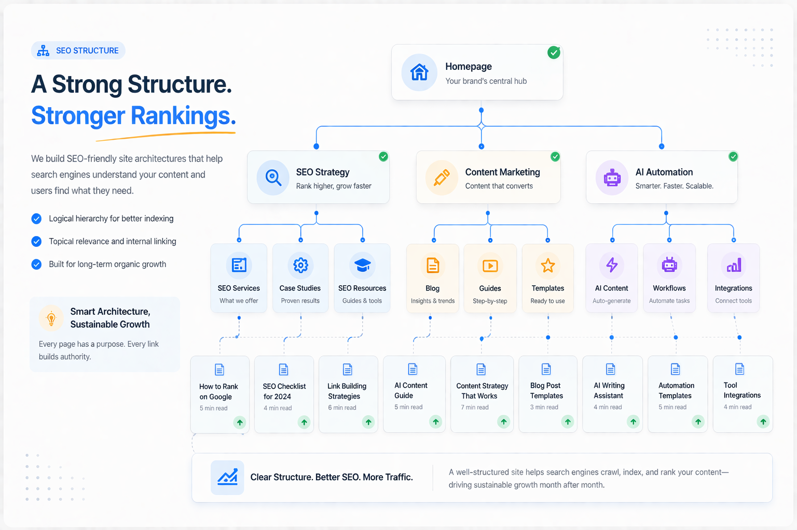
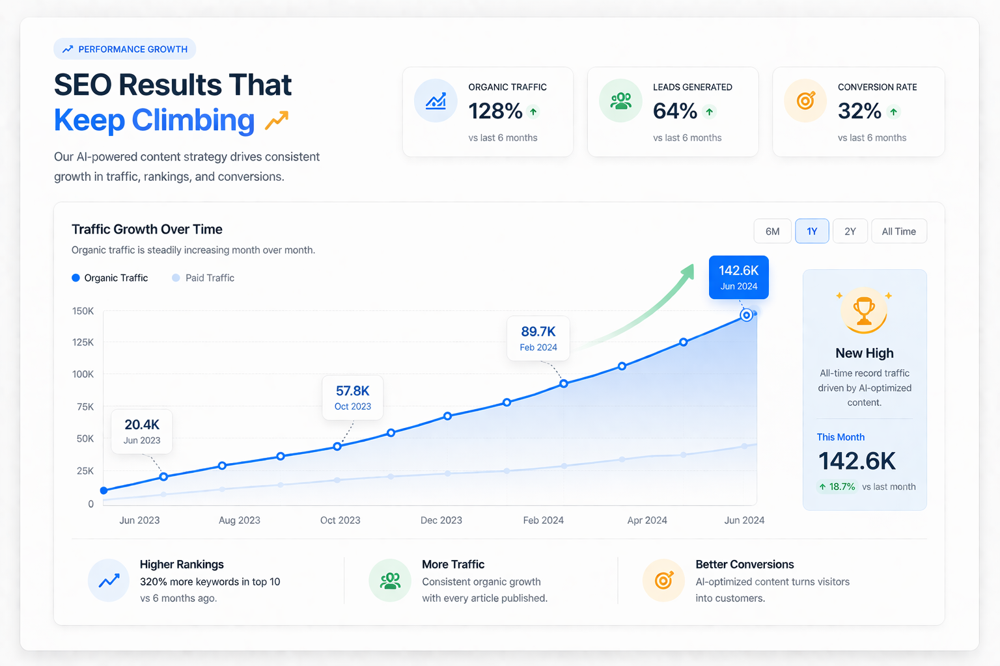

Define industry focus and keyword direction
Start by organizing your services, target audience, and search demand to establish a clear content strategy.
The Aplus AI SEO system is built around keyword strategy, AI topic generation, SEO article creation, content management, publishing workflow, and performance analysis. It helps businesses create a sustainable content growth process, turning a website from a static company page into a growth engine that continuously generates organic traffic and potential customers.
Many business websites struggle because content is updated too slowly, topics are not planned strategically, and there is no stable source of organic traffic. The issue is often not the website itself, but the lack of a system that can continuously produce searchable content.
The Aplus AI SEO system connects keyword direction, article topics, content generation, publishing workflow, and performance tracking, allowing businesses to build content assets systematically, increase search visibility, and turn traffic into real inquiries and opportunities.
We believe a business website should not be just a static display page. It should be a content engine that keeps running, keeps growing, and keeps bringing in traffic and customer opportunities.

From content planning to publishing and performance review, this workflow is designed to continuously build search visibility and organic traffic.
Start by organizing your services, target audience, and search demand to establish a clear content strategy.
Quickly create article ideas that are relevant, searchable, and sustainable for long-term publishing.
Create search-friendly articles that improve publishing efficiency and strengthen content depth across the site.
Turn content into search entry points, then refine strategy based on traffic, inquiries, and content performance.
These six modules form the core of the system. Each serves a specific function, and together they create a complete AI SEO workflow tailored to your brand.

Organize brand themes, search intent, and content direction so your website grows with structure instead of scattered content.

Quickly expand topic ideas based on your industry and services, reducing the time and pressure of content planning.

Generate search-structured articles that improve publishing efficiency and make ongoing content updates easier.

Manage drafts, published articles, and update workflows in one place, making content operations clearer and more organized.

Make sure articles are not only written, but also organized in a way that search engines can better understand and index.

Track article performance, traffic sources, and inquiry results so you can identify which content truly brings business opportunities.
From brand services and industry keywords to user demand, create a more strategic content plan.
Reduce the time spent writing from scratch and make it easier to maintain a steady publishing rhythm.
Create more searchable topics and articles to gradually expand your website’s organic traffic entry points.
Manage topics, drafts, publishing, and tracking in one system to reduce confusion and rework.
Focus not only on traffic, but also on how content leads to forms, contact, and real inquiries.
Every article can become a future traffic entry point and gradually add long-term business value to your site.
This is not a standalone tool. It integrates content strategy, article creation, website updates, and analytics into one sustainable workflow.
Organize brand themes, keyword direction, and content groups to build a stronger website content structure.
Connect topic generation and article creation to reduce the daily burden on content teams.
Make article creation, editing, and maintenance more consistent and easier to manage.
Ensure each article’s title, logic, and layout align better with how search engines work.
Observe content performance and traffic sources to see which topics bring the most valuable visitors.
Guide content traffic into contact forms, leads, and bookings so content connects to real business outcomes.
Build trust through professional content and make it easier for potential clients to find you in search.
Turn your website from a simple display page into a business asset that builds traffic and inquiries over time.
Use content to build authority and create long-term visibility through consistent search entry points.
Use SEO content strategy to build organic traffic gradually and reduce pressure from relying only on paid acquisition.
Understand your industry, website positioning, current content status, and growth goals.
Define topic direction, article types, and content structure so the system fits your brand more closely.
Start using the AI SEO workflow to create articles and gradually build your website’s searchable content assets.
Adjust your strategy continuously based on website performance, traffic, and inquiry results.
Tell us about your industry, website status, and content goals, and we can help you plan the right structure and implementation approach.